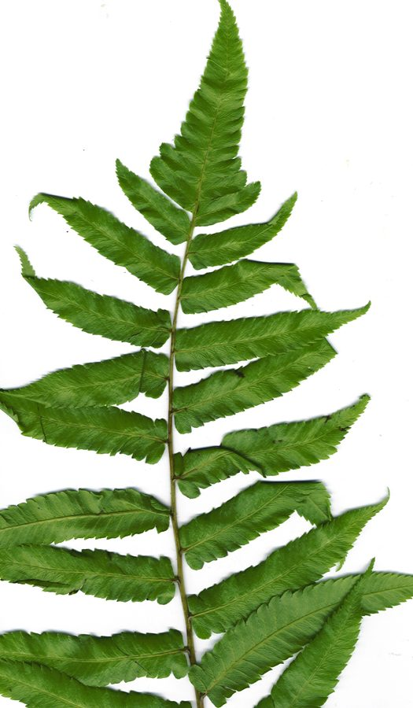

वेजिटेबल फर्नVegetable Fern
Diplazium esculentum · Athyriaceae · FLR-0385

- Scientific name वैज्ञानिक नाम
- Diplazium esculentum (Retz.) Sw.
- Family कुल
- Athyriaceae
- Hindi हिंदी
- वेजिटेबल फर्न
- Local names स्थानीय नाम
- vegetable fern, fiddlehead fern, edible fern, paco fern
- Status here यहाँ की स्थिति
- native
- Movement आवागमन
- Resident, here all year
- Known from कहाँ दर्ज
- Others have published records from the wider Awadh–Purvanchal plain, none yet from Basti–Ayodhya अवध–पूर्वांचल से दूसरों के प्रकाशित अभिलेख, बस्ती–अयोध्या से अभी नहीं
- IUCN IUCN
- LC
- Review समीक्षा
- not yet reviewed
When to look कब देखें
Present all year. साल भर मौजूद।
Uses and possibilities उपयोग और संभावनाएँ
Drawn from the documented uses in the profile below, where each is labelled traditional, current or a research lead. All uses →
Tell it apart from इनसे अलग पहचानें
वेजिटेबल फर्न / Vegetable Fern
Diplazium esculentum (Retz.) Sw. — Athyriaceae
वेजिटेबल फर्न — अवध के तराई क्षेत्रों, दलदली नालों, छायादार नहरों और बारहमासी झरनों के किनारों पर उगने वाला एक बड़ा देशी फर्न है जिसकी जड़ें जमीन में मोटी गांठ जैसी होती हैं। बरसात के दिनों में इसके तने से नए मुड़े हुए कोमल कल्ले (फिडलहेड) निकलते हैं जो सांप की कुंडली की तरह घूमे होते हैं और जिन्हें सब्जी के रूप में पकाया जाता है। यह नम जलोढ़ मिट्टी को बांधकर किनारों का कटाव रोकने में मदद करता है।
Quick Identification त्वरित पहचान
| Feature | Description |
|---|---|
| Habit | Large, robust terrestrial rhizomatous fern forming erect or suberect micro-trunks |
| Rhizome | Thick, woody, erect to ascending, densely clothed with dark brown lanceolate scales |
| Fronds | Bipinnate to tripinnatifid, large, arching; stipes smooth, green to brownish, scaly at base |
| Pinnae | Alternate, oblong-lanceolate; pinnules serrate to lobed with veins anastomosing into pairs |
| Sori | Elongated along veinlets, linear, solitary or paired back-to-back (diplazioid) |
| Fiddleheads | Young emerging croziers tightly coiled, succulent, green, sparsely scaly, highly edible |
Large marsh fern with a stout trunk-like rhizome, large bipinnate fronds with distinct paired back-to-back sori along the veinlets, and coiled tender croziers emerging along wet muddy watercourses.
हिंदी: मोटी गांठदार जड़, बड़े दोहरे कटे हुए पत्ते, नसों पर जोड़ों में लगी बीजाणु-धानियां (सोराई) और मुड़े हुए कोमल कल्ले इसकी पहचान हैं।
Morphology आकारिकी
Terrestrial marsh fern with a robust, erect to decumbent rhizome that can form a small woody trunk up to several decimeters high in old specimens. The rhizome apex and base of the stipes are densely covered with dark brown to blackish, lanceolate, entire or finely toothed scales.
Fronds are caespitose, large, arching, and bipinnate to tripinnatifid at the base. Stipes are green to dark stramineous, firm, smooth above, and scaly near the base. The rachis is smooth, green, and narrowly grooved along the upper surface. Pinnae are numerous, alternate, ascending, oblong-lanceolate, with acuminate tips. Pinnules are sessile or short-stalked, oblong to lanceolate, with an asymmetrical base, crenate to lobed margins, and an acute apex. The venation is characteristic: veinlets from adjacent lobes unite in pairs towards the sinus, forming a distinct zigzag excurrent veinlet that reaches the margin.
Sori are linear and elongated along the veinlets, extending from near the midrib outwards. Crucially for the genus, sori are frequently arranged back-to-back in pairs on both sides of a veinlet (the diplazioid sorus), each sorus protected by a membranous, elongate indusium that opens outward along its lateral edge. Spores are monolete, bilateral, ellipsoidal, with a folded or winged perispore.
| Measurement | Dimension / Count | Qualitative Context |
|---|---|---|
| Frond length | Measurement not available in consulted open sources. | Large arching bipinnate fronds forming crowns |
| Rhizome diameter | Measurement not available in consulted open sources. | Stout woody suberect trunk-like stock |
| Pinna count | Measurement not available in consulted open sources. | Numerous alternate ascending pinnae per frond |
| Sorus arrangement | Measurement not available in consulted open sources. | Elongate, paired back-to-back along veins |
| Spore shape | Measurement not available in consulted open sources. | Bilateral, monolete with winged perispore |
हिंदी: इसके पत्ते बहुत बड़े और दोहरे कटे होते हैं। जड़ मोटी और लकड़ी जैसी होती है। पत्तियों के पीछे नसों पर लंबी-लंबी बीजाणु-धानियां (सोराई) जोड़ों में आमने-सामने लगी होती हैं।
Behaviour & Ecology व्यवहार एवं पारिस्थितिकी
Diplazium esculentum is an obligate wetland and riparian fern that requires constantly moist, waterlogged, or semi-shaded conditions. It thrives in fine silt and rich alluvial mud along perpetual streams, sluggish ditches, swamp forest clearings, and irrigation channels across northern India.
The species plays an important ecological role as a riparian soil stabilizer. Its dense, interlocking network of fibrous black roots and stout rhizomes binds soft muddy banks, preventing slumping and siltation during high-volume monsoon torrents. It tolerates brief immersion during seasonal inundations, resprouting promptly from subterranean crowns once floodwaters recede.
हिंदी: यह पौधा केवल दलदली, अत्यधिक नम और छायादार स्थानों पर ही पनपता है। इसकी घनी जड़ें दलदल और नालों की मुलायम मिट्टी को मजबूती से जकड़े रखती हैं जिससे कटाव रुकता है।
Life Cycle / Phenology जीवन चक्र एवं ऋतुचर्या
As a pteridophyte, Diplazium esculentum exhibits an alternation of generations involving a conspicuous sporophyte plant and an inconspicuous subterranean or surface gametophyte (prothallus). The sporophyte is evergreen in humid conditions, maintaining green fronds throughout the year.
The primary flush of new fiddleheads (circinate croziers) occurs with the onset of the pre-monsoon showers and monsoon rains from June to September. Young crosiers unfurl rapidly, maturing into expansive spore-bearing fronds within a few weeks. Sori develop on the undersides of the pinnules from August to November. Mature sporangia dehisce in dry autumn air, ejecting countless microscopic spores that germinate in perpetually damp mud to form cordate green prothalli.
हिंदी: बरसात शुरू होते ही इसकी जड़ से नए मुड़े हुए कल्ले फूटते हैं जो तेजी से बड़े पत्ते बन जाते हैं। जाड़ों में पत्तियों के पीछे बीजाणु पकते हैं और हवा में बिखर जाते हैं।
Associated Species / Interactions संबद्ध प्रजातियाँ एवं पारिस्थितिक संबंध
The dense, humid microhabitats formed by stands of Vegetable Fern support a rich community of wetland fauna. Amphibians and semi-aquatic frogs seek shelter beneath its arching fronds during the heat of the day.
Freshwater snails, marsh crabs, and aquatic insect larvae frequent the submerged root clumps. The foliage is rarely consumed by herbivorous insects, but small marsh-dwelling birds forage among the rhizome hummocks for hiding aquatic invertebrates.
हिंदी: इसके घने पत्तों के नीचे मेंढक, सीप, घोंघे और दलदली कीड़े दिन के समय धूप से बचने के लिए शरण लेते हैं।
Pests and Diseases कीट एवं व्याधियाँ
Diplazium esculentum has virtually no severe pest problems in natural habitats. The tough, silicate-rich vascular tissues and secondary metabolites of mature fronds provide effective chemical and mechanical protection against generalist folivores.
During stagnant, exceptionally humid warm periods, older fronds may become colonized by saprophytic sooty moulds or leaf-spotting microfungi, but these rarely compromise the health of the perennial rhizome.
हिंदी: परिपक्व पत्तों के कड़े और रेशेदार होने के कारण कीड़े-मकोड़े इसे नहीं खाते। बहुत अधिक उमस में कभी-कभी पुराने पत्तों पर फफूंद के काले धब्बे आ जाते हैं।
Agricultural / Human Relevance कृषि एवं मानवीय उपयोगिता
Diplazium esculentum is among the most widely consumed wild edible ferns in South and Southeast Asia. The tender young fronds (fiddleheads) are picked before they unroll and cooked as a vegetable or pickled.
It should always be thoroughly cooked before it is eaten.
हिंदी: इसके नए मुड़े हुए कोमल कल्लों (फिडलहेड्स) को सब्जी बनाकर खाया जाता है। इसे हमेशा अच्छी तरह पकाकर खाना चाहिए।
Expected Locally स्थानीय रूप से अपेक्षित
Not a field record. Written from published accounts for eastern Uttar Pradesh. No confirmed local sighting yet — if you have seen it, that is what the atlas needs.
अभी तक स्थानीय पुष्टि नहीं। यह विवरण प्रकाशित स्रोतों से है, किसी अवलोकन से नहीं।
Occurs in damp swampy lowlands, perennial drainage nullahs, and canal seepages in the northern districts of eastern Uttar Pradesh towards the Terai border. Observers in Basti and Ayodhya should search moist shaded banks of older canal systems and wetland fringes for large ferns with stout scaly crowns and paired linear sori.
GBIF holds published records from the wider Awadh–Purvanchal plain, none yet from Basti–Ayodhya.
A first local record for the atlas would be a clear photograph showing diagnostic features, accompanied by date, time, and precise location coordinates sent through the project's About page.
हिंदी: बस्ती और अयोध्या में नहरों की सीलन वाली पटरियों और तराई के दलदली नालों पर इसके बड़े फर्न और मुड़े हुए कल्ले देखे जा सकते हैं।
Distribution वितरण
Widespread across the paleotropics, extending from India, Sri Lanka, Nepal, and Bhutan through southern China, Taiwan, the Philippines, Indonesia, and across the Pacific islands.
In India, it is abundant throughout the Western Ghats, northeastern states, the Himalayan foothills, and the Terai marshes of Uttar Pradesh and Bihar, inhabiting wet riverbanks and damp lowland valleys.
हिंदी: यह पौधा भारत, नेपाल, भूटान, चीन और पूरे दक्षिण-पूर्व एशिया में पाया जाता है। उत्तर प्रदेश के तराई और नम मैदानी इलाकों में यह नालों के किनारे मिलता है।
Research Questions शोध प्रश्न
- What are the optimal culinary preparation and blanching methods to maximize retention of antioxidants while degrading anti-nutritional factors in vegetable fern fiddleheads?
- How does the tensile strength of Diplazium esculentum rhizomes contribute to the physical stabilization of canal embankments in alluvial plains?
- To what extent does seasonal water pollution in agricultural drainage ditches affect the growth and safety of harvested wild fiddleheads?
- क्या अवध के तराई क्षेत्रों में वेजिटेबल फर्न की नियंत्रित व्यावसायिक खेती किसानों के लिए अतिरिक्त आय का स्रोत बन सकती है?
- क्या नहरों की सफाई और रासायनिक खरपतवारनाशकों के प्रयोग से इसके प्राकृतिक आवास तेजी से नष्ट हो रहे हैं?
हिंदी: क्या वेजिटेबल फर्न की व्यावसायिक खेती संभव है और नहरों के पक्के होने व कीटनाशकों से इसके प्राकृतिक आवास पर क्या असर पड़ा है, यह अध्ययन का विषय है।
Similar Species मिलती-जुलती प्रजातियाँ
| Species | How to tell apart | हिंदी | |
|---|---|---|---|
| Chinese Brake Fern \ | Pteris vittata | Simply pinnate; fronds narrow; sori forming continuous marginal lines under reflexed edge | केवल एकहरा कटा हुआ पत्ता, बीजाणु-धानियां किनारे पर सीधी रेखा में होती हैं |
| Maidenhair Fern \ | Adiantum capillus-veneris | Delicate fan-shaped pinnules on wiry black stipes; reniform sori beneath reflexed lobes | हंसराज के पत्ते नन्हे पंखे जैसे और डंडी काली चमकदार तार जैसी होती है |
| Ceratopteris thalictroides ([[azolla\ | Water Fern]]) | Aquatic or semi-aquatic; succulent green stems; dimorphic fronds with narrow fertile pinnae | पूरी तरह पानी में उगने वाला फर्न, उपजाऊ पत्ते बहुत पतले होते हैं |
Field rule: Look for the robust terrestrial marsh habit, bipinnate arching fronds with anastomosing venation, and characteristic paired back-to-back linear sori along the veinlets.
हिंदी: दलदली जमीन पर बड़ा फर्न, दोहरे कटे हुए पत्ते और नसों पर जोड़ों में आमने-सामने लगी लंबी बीजाणु-धानियों से इसे पहचानें।
Taxonomy & Classification वर्गिकी एवं वर्गीकरण
Original description. The species was originally described by the Swedish botanist Anders Jahan Retzius under the basionym Hemionitis esculenta in Observationes Botanicae, fasc. 6, p. 38 (1791). In 1803, Olof Swartz transferred it to the genus Diplazium as Diplazium esculentum (Retz.) Sw. in Journal für die Botanik, 1801(2), p. 312.
Subspecies. No subspecies are recognized. Historical regional pteridological accounts frequently cited the taxon under the synonym Athyrium esculentum (Retz.) Copel. Ferns were excluded from Hooker's Flora of British India, but the species was thoroughly treated by R. H. Beddome in his Handbook to the Ferns of British India, Ceylon and the Malay Peninsula (1883).
Family and order placement. Belongs to the wood fern and lady fern family Athyriaceae (sometimes treated historically in Woodsiaceae or Dryopteridaceae), order Polypodiales, class Polypodiopsida.
IUCN status rationale. Least Concern (LC). Diplazium esculentum is widely distributed across the Indo-Pacific realm with extensive populations in wetlands, agricultural ditches, and riparian zones.
हिंदी: 1791 में रेट्जियस ने इसे हेमियोनिटिस एस्कुलेंटा नाम दिया था, जिसे 1803 में स्वार्ट्ज ने डिप्लोजियम एस्कुलेंटम बनाया। पुरानी किताबों में इसे एथिरियम एस्कुलेंटम भी कहा गया है।
Photo Gallery छायाचित्र दीर्घा
No photos yet — this profile is written from published accounts. A voucher-grade photo from eastern Uttar Pradesh will illustrate this species in the atlas.
References संदर्भ
- Original description: Retzius, A. J. (1791). Observationes Botanicae. Fasc. 6. Siegfried Lebrecht Crusium, Lipsiae, p. 38.
- Swartz, O. (1803). Observationes botanicae genera et species filicum illustrantes. Journal für die Botanik, 1801(2), p. 312.
- Beddome, R. H. (1883). Handbook to the Ferns of British India, Ceylon and the Malay Peninsula. Thacker, Spink and Co., Calcutta, p. 169.
- Copeland, E. B. (1908). Fern genera of the Philippines. Philippine Journal of Science, Section C (Botany), 3(5), p. 295.
- GBIF Occurrence Data — Diplazium esculentum, India (2025).
- IUCN Red List of Threatened Species — Diplazium esculentum, assessed 2024.
Source file: species/lower_plants/ferns/vegetable_fern.md